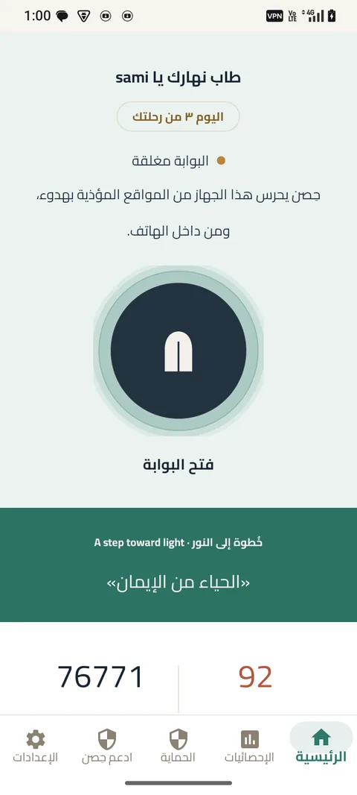
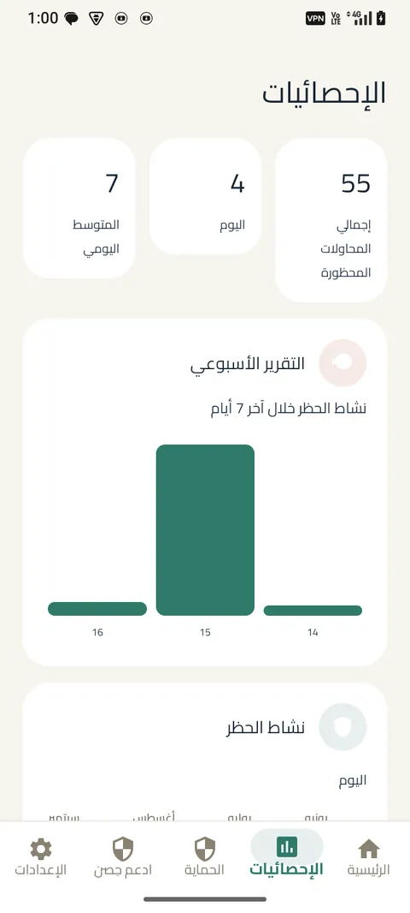
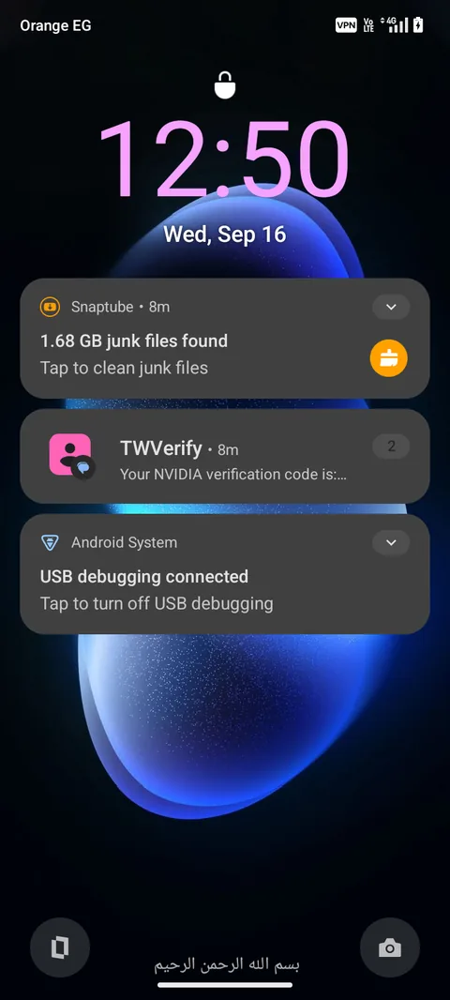

حافظ على تركيزك
وقل وداعاً للمشتتات
HISN حجب هادئ للمواقع المزعجة داخل جهازك — بلا مراقبة، بلا حساب. البوابة مغلقة، وأنت تتقدم.
دومين محجوب 100%
على الجهاز 0
بيانات تُرسل



ما هو حِصن؟
تطبيق حِصن يحمي هاتفك من المحتوى المؤذي — فلترة DNS داخل الجهاز، بلا خادم خارجي، بلا تتبع. ترى الحماية تعمل أمامك: حالة البوابة، الإحصائيات، والتقدم.
- ✓ البوابة — مغلقة/مفتوحة بحركة هادئة
- ✓ الإحصائيات — 76771 دومين محجوب، 84 محاولة اليوم
- ✓ التقدم — نقاط + مستوى + streak
رحلة الحماية — التطبيق الحقيقي.
اسحب ببطء… التطبيق نفسه يقودك عبر أربع محطات.
الحماية شغّالة بهدوء.
هذه شاشة حِصن الحقيقية: البوابة مغلقة، حديث اليوم أمامك، وعدّاد الحماية يعمل في الخلفية — كل شيء داخل جهازك، لا شيء يخرج.
لحظة الحجب — لا يظهر شيء.
عند محاولة فتح موقع محجوب، لا يومض المحتوى ولو للحظة. تظهر شاشة «اتقي الله» كاملة: تذكير هادئ من مصدر موثّق، ثم عودة آمنة دون إعادة فتح الرابط.
تقدّمك أمامك.
كل محاولة محجوبة تتحول إلى تقدم: إحصائيات اليوم، الأسبوع، وخريطة نشاط — بيانات تبقى على جهازك وحده.
تحكم كامل بيدك.
فئات الحماية، الجدولة، قفل التطبيقات، ورقم سري يحمي الإعدادات — كل قرار بيدك، ومحمي بـ PIN.
المشكلة ليست في إرادتك وحدها.
مئات المواقع الجديدة كل يوم — الإرادة وحدها لا تكفي أمام سيل لا ينتهي. حِصن يضع حاجزاً هادئاً قبل أن يصل المحتوى إلى عينيك.
مواقع جديدة تُنشأ كل ساعة — الحجب اليدوي مستحيل.
نقرة واحدة قد تجرّ أياماً من الندم — الحاجز يمنحك ثانية للتفكير.
لا سجل، لا تتبع — حماية لا تتجسس.
حين يُحجب موقع — لا يظهر شيء.
المحتوى المحجوب لا يومض أمامك. تظهر شاشة حِصن كاملة: “اتقي الله” — تذكير هادئ، ثم عودة آمنة للمتصفح دون إعادة فتح الرابط.
Back لا يعيد فتح الرابط المحجوب — تاريخ التصفح آمن.
تذكير، لا توبيخ.
كل حجب يختار رسالة مختلفة: تذكير لطيف، ثم تأمل، ثم تحدٍ سلوكي — “توضأ وصلّ ركعتين” — لا عقاب، بل توجيه.
“من ترك شيئاً لله عوّضه الله خيراً منه”
هل يرضيك أن يراك الله على هذه الصفحة؟
تحدي 3 أيام بلا محاولة — نقطة +10
كل الفحص يحدث داخل جهازك.
لا شيء يغادره.
هذه ليست وعودًا تحتاج تصديقها — إنها طريقة عمل حِصن تقنيًا.
-
الفلترة على الجهاز، بالكامل.
حين يطلب المتصفح فتح موقع، يجري الفحص داخل الهاتف نفسه. لا يمر طلبك عبر أي خادم لنا، ولا نحتاج إلى ذلك أصلًا.
-
تاريخ التصفح لا يُسجَّل ولا يُرسل.
حِصن لا يحتفظ بسجل للمواقع التي تزورها، ولا يرسله إلى أي جهة. لا نعرف ما فتحت، ولا يوجد سبب يدفعنا لمعرفته.
-
يمكنك إيقافه متى شئت.
من إعدادات الجهاز نفسها، ويعود الاتصال إلى حالته الطبيعية فورًا. لا حساب تنتظر حذفه، ولا أحد يسألك لماذا.
-
قائمة الحظر تتحدّث وحدها في الخلفية.
تصل التحديثات وتُطبَّق من دون تدخل منك، فتبقى الحماية مواكبة للمواقع الجديدة دون أن تشعر بذلك.
-
الكود مفتوح المصدر.
يمكن لأي شخص مراجعته والتأكد بنفسه من خلوّه من أي تتبع مخفي — الكود متاح للجميع على GitHub.
حمّل حِصن — ماذا ستثبّت؟
اختر منصتك — كل رابط حقيقي، بلا وهم.
v1.0 (1) • 9.2 MB • Android 7.0+ • SHA256 79eda473dba0…
حمّل APKتثبيت مباشر — دليل التثبيت
Qt6/C++ • 5.0M • Ubuntu 24.04 • ADB/scrcpy
حمّل للديسكتوبcmake -S desktop -B build && ./build/android-control